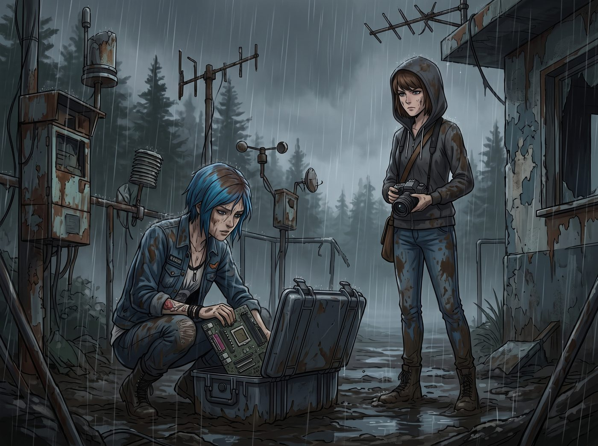

雨後的黃金時刻


三英里外的廢棄氣象站，在奧林匹亞半島的暴雨中簡直像個泥濘的地獄。
「喀。」伴隨著最後一顆生鏽螺絲被擰下來的聲音，Chloe 把那塊沉甸甸的舊主機板從機箱裡拔了出來，塞進防水收納箱，扣上鎖扣。她喘著粗氣，抹了一把臉上混合著雨水和鐵鏽的泥水。
「拆卸完畢，封箱完成。」Chloe 轉過頭，試圖擠出一個帥氣的笑容，「長官，請指示。」
一、死亡視線
站在三步之外的 Max 沒有說話。
她穿著那雙原本價值三千五百美金、現在已經被泥漿徹底包裹的羊絨靴，雙手舉著那台套著鈦合金護甲的無螢幕相機，對著空掉的機箱和封好的收納箱，面無表情地按下了快門。
「喀嚓。」這是第三張照片，除役存證的任務完成了。
Max 緩緩放下相機。兜帽邊緣還在滴水，棕色短髮緊緊貼在臉頰上。她抬起頭，用一種極度安靜、卻彷彿能發射雷射的死亡視線，死死盯著 Chloe。
那眼神裡包含了太多訊息：我為什麼要陪妳發瘋、我的腳快凍僵了、回去之後我一定會趁妳睡覺把妳的臉畫成小丑。
Chloe 的笑容瞬間僵住。她太熟悉這個表情了。Max 發火的時候從不大吼大叫，只會用這種無聲的怨念把人釘在恥辱柱上。
Chloe 的大腦開始瘋狂超頻，試圖在零點一秒內生成十套安撫這隻落湯貓的方案：把鍋全推給 Lily 的官僚主義；承諾包攬未來一個月的洗碗；直接跪下道歉……
就在她張嘴，準備啟動最後那個方案的時候——
二、萬丈金光
滴答。雨，突然停了。
不是漸漸變小，而是彷彿天空的水龍頭被誰一把擰緊了一樣，戛然而止。奧林匹亞半島的微氣候總是這麼神經質。一陣強勁的海風吹過，頭頂那層厚重如鉛塊的雨雲被粗暴地撕開了一道巨大的裂口。
下一秒，萬丈金光傾瀉而下。
傍晚的黃金時刻毫無預兆地穿透冷杉林的縫隙，將原本陰森的泥濘雨林瞬間渲染成一片壯麗的赤金色。雨珠在針葉上折射著細碎的光芒，空氣裡瀰漫著松香、泥土和雨後特有的清冽氣息。
Max 抱怨的話卡在喉嚨裡，被眼前這神蹟般的光影震住了。氣象站建在半山腰的懸崖邊，此刻雲海在她們腳下翻滾，遠處的太平洋閃爍著碎金般的光。
Chloe 敏銳地捕捉到了 Max 眼中敵意的消散。街頭龐克的求生本能，立刻轉化成了極致的浪漫直覺。
「咳，妳看。」Chloe 裝出一副運籌帷幄的樣子，雙手插在濕透的口袋裡走到 Max 身邊，「我早就查過天氣預報了。我是故意挑這個時候帶妳出來的。這叫……戰術性浪漫拉練。」
「騙子。」Max 白了她一眼，但語氣裡的殺氣已經沒了。
三、藍領的未雨綢繆
Chloe 嘿嘿一笑，變戲法似的從防水工裝外套的超大內袋裡，掏出一塊摺疊整齊的防水地墊、兩罐被壓得有點變形的黑啤，還有一包被壓碎了的 Kate 牌無麩質巧克力餅乾。
「妳出門幹苦力，居然隨身帶著野餐裝備？」Max 驚呆了。
「這叫藍領的未雨綢繆。」Chloe 俐落地抖開地墊，鋪在懸崖邊一塊稍微乾燥的平坦岩石上，拉著 Max 坐下，「實習生讓我們來幹活，可沒規定我們不能在收工後享受生活，對吧？」
兩個人並肩坐在懸崖邊。Chloe 咬開拉環遞過去一罐，冰涼微苦的液體順著喉嚨滑下，竟然奇異地驅散了徒步帶來的寒意與疲憊。
周圍沒有無人機的轟鳴，沒有 Lily 敲鍵盤的聲音，也沒有 Victoria 嫌棄的抱怨。只有風吹過冷杉林的沙沙聲，和遠處海浪拍打礁石的白噪音。
Max 捧著啤酒，看著夕陽給 Chloe 濕漉漉的藍髮鍍上一層溫暖的金邊。Chloe 正指著遠處一朵雲，興致勃勃地瞎掰那是一艘來接她們去外星的飛碟。
那種曾經只在阿卡迪亞灣廢棄垃圾場裡才有的、專屬於她們兩人的秘密基地感，在這一刻回來了。被 Lily 壓榨的苦逼打工，莫名其妙地變成了一場無比奢侈的絕版露營。
四、沒有螢幕的快門
Max 放下啤酒，拿起胸前那台相機。因為有 Chloe 焊的鈦合金護罩，它沉甸甸的，充滿了安全感。她沒有看觀景窗，只是憑著感覺，把鏡頭對準了正在對著夕陽傻笑的 Chloe。
「喀嚓。」
沒有螢幕預覽，Max 不知道這張是不是又失焦了，或者逆光到只剩一團黑影。但她不在乎。這台相機裡裝著的，是她們從世界末日裡偷來的一場雨後初晴，是哪怕靴子踩滿了泥巴，依然覺得這一天無比完美的浪漫。
「喂，妳是不是偷拍我了？」Chloe 轉過頭，挑起一邊眉毛，「沒螢幕的相機，要是把我拍得像個泥猴，我可是會把妳推下去的。」
「放心吧。」Max 靠在 Chloe 的肩膀上，感受著對方傳來的體溫，聲音輕快而溫柔，「在我的鏡頭裡，妳永遠是這片廢土上最帥的傻瓜。」